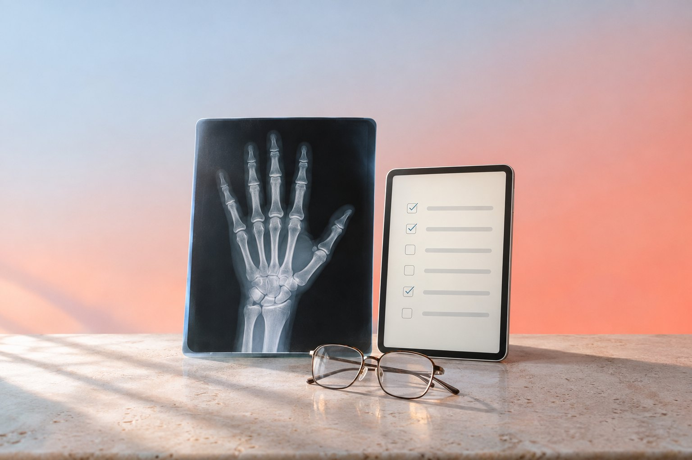
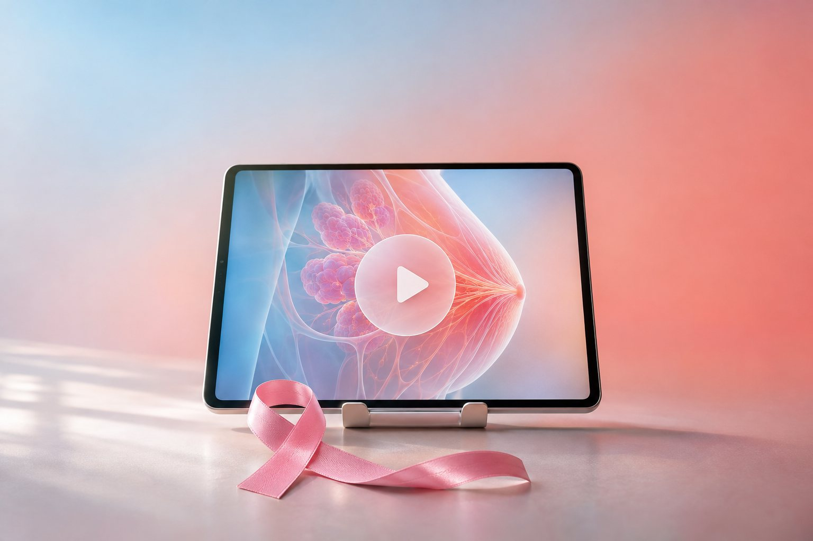
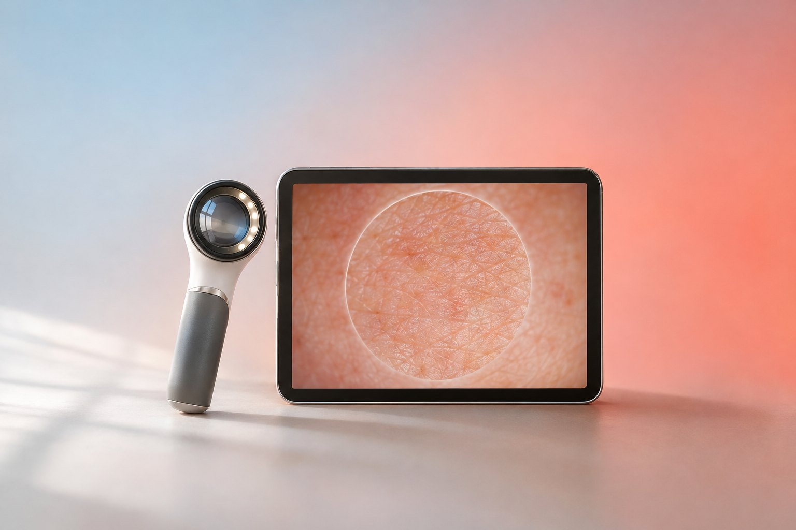
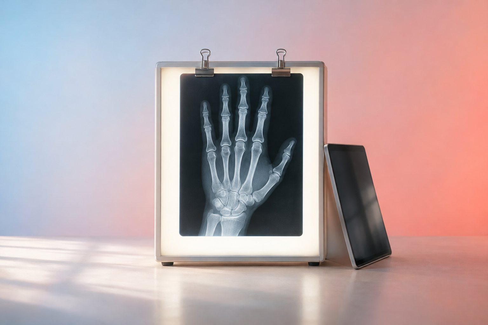

Blog
Gedanken aus Forschung und Praxis zu KI in der Medizin.

Elf Start-ups beim AGAthon AI-Pitch in Darmstadt
Drei Minuten pro Pitch, Themen von Pflege bis OP-Dokumentation: Eindrücke vom zweiten AI-Pitch der AGAPLESION am Klinikum Darmstadt.

KI, die im Pflegealltag ankommt
Beim Deutschen Pflegetag in Berlin haben wir gezeigt, wie Sprach-KI in der Pflegedokumentation entlastet: voize, integriert in ORBIS von Dedalus.
Drei Jahre Sprachmodelle in der Klinik
Vom Feintuning früher GPT-Modelle über Retrieval Augmented Generation bis auf die Station. Eine Zwischenbilanz aus Forschung und Krankenhausalltag.
Weitere Beiträge
Von der Betriebswirtschaft zur medizinischen KI
Zurück an der FH Aachen: über einen Weg, den ich selbst nicht erwartet hätte, und warum interdisziplinäre Profile heute wichtiger sind denn je.

Wo KI in der Diabetologie heute schon hilft
Kaum ein Fach erzeugt so viele Daten pro Patient wie die Diabetologie. Wo KI hier hilft und wo man vorsichtig bleiben sollte.

Der virtuelle Doktor in der Telefonzelle
Auf der Bundesgartenschau 2023 konnten Besucherinnen und Besucher mit einem virtuellen Doktor sprechen. Was wir dabei über Technik und Vertrauen gelernt haben.

RheumBench: Was Sprachmodelle in der Rheumatologie können und was nicht
Prüfungsfragen sagen wenig über den Alltag. Deshalb haben wir einen Benchmark mit rheumatologischen Fällen gebaut, den Fachärztinnen und Fachärzte bewerten.

Retrieval Augmented Generation in der Brustkrebsversorgung
Warum ein kleines Sprachmodell mit dem richtigen Leitlinienwissen mehr hilft als ein großes Modell ohne Quellen.

KI ohne Daten ist sinnfrei
Alle reden über KI-Agenten. Nutzen entsteht aber erst, wenn KI-Strategie und Datenstrategie zusammen gedacht werden.

Das größte Hindernis ist nicht mehr die Technik
Eine Woche DMEA und der Recare AI Summit in Berlin: Viele Technologien schaffen den Weg in die Klinik. Was fehlt, sind Schnittstellen.

DokPro: Eine KI-Kabine für die Notaufnahme
Wartezeit sinnvoll nutzen: Wie ein Avatar Patientinnen und Patienten durch die Anamnese führt und dem Behandlungsteam einen strukturierten Bericht übergibt.

Ein Prototyp für die Patientenaufklärung in zwei Tagen
Wie schnell lassen sich Ideen heute in funktionierende Software übersetzen? Ein Experiment zur Aufklärung bei Brustkrebs, entstanden mit Claude Code und Azure.

Raus aus der Universität, rein in die Praxis
Vor einem Jahr stand ich zum ersten Mal beim DRG-Forum auf der Bühne. Auf der Rückfahrt im Zug fiel eine Entscheidung. Jetzt gab es dafür den Vordenker Award.
Kann ChatGPT bei medizinethischen Entscheidungen helfen?
Wenn es um Therapiebegrenzung oder den mutmaßlichen Willen geht, gibt es selten eine richtige Antwort. Was Sprachmodelle hier beitragen können.

Wie gut Sprachmodelle Hautbefunde lesen
Multimodale Modelle versprechen, auch Fotos zu beurteilen. Wir haben geprüft, wie gut das bei Hautbefunden funktioniert.

Röntgenbilder in der Notaufnahme schneller auswerten
Im hr-Magazin maintower haben Oberärztin Sabine Geck und ich das Projekt AZmed am Klinikum Elisabethenstift Darmstadt vorgestellt.